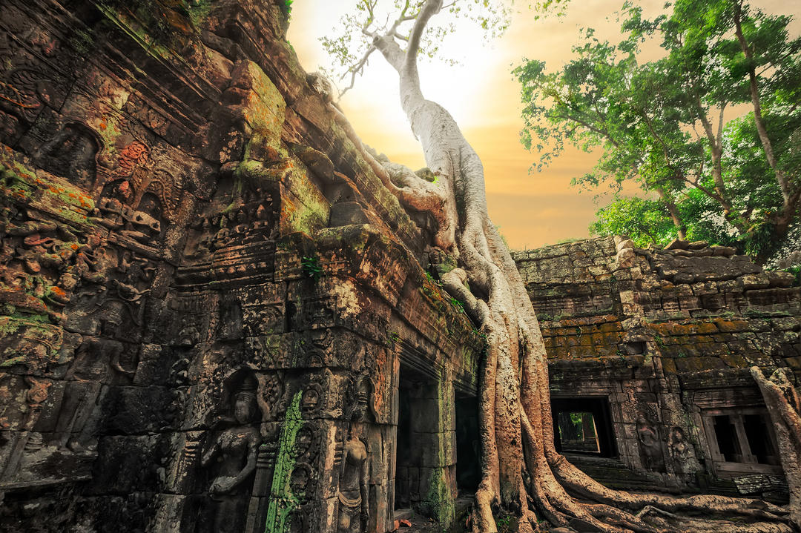

Вырубленная в каменных склонах Петра некогда была столицей Идумеи, а позднее — Набатейского царства. Этот удивительный город затерян в скалах Иордании — в узком каньоне Сик, на высоте более 900 м над уровнем моря. Он производит огромное впечатление — невозможно поверить, что это чудо было создано людьми более двух тысяч лет назад. А с первыми лучами солнца и на закате Петра переливается алыми и нежно-розовыми тонами, зачто и получила прозвище Розовый город.
Чтобы попасть в Петру, придется пройти по ущелью Сик несколько километров, но это того стоит. Выйдя за стены мрачного коридора, вы увидите изящные фронтоны дворца-усыпальницы Эль-Хазне, изумительный монастырь Эль-Дейр, источник Моисея (Аль-Муса), многочисленные храмы, колоннады, бани и мавзолеи — всего здесь насчитывается более 800 архитектурных и исторических памятников. Все они внесены в список Всемирного наследия ЮНЕСКО.
Осмотреть все интересное здесь за один день вряд ли получится. Переночевать можно в одном из отелей города Вади
Муса,
расположенного на расстоянии около полутора километров от Петры.
Уникальный храмовый комплекс Ангкор находится в Камбодже, недалеко от города Сием Рип. В период с IX по XVI век этот район стал сердцем Кхмерской империи и здесь было возведено огромное количество храмов, отличающихся уникальным архитектурным стилем. Все здания построены из песчаника и латерита — все они отличаются удивительной гармонией и совершенством форм. Наиболее популярным считается Ангкор-Ват — самое большое в мире сооружение подобного рода, а самым красивым — храм Бантей Срей. Лучше всего любоваться им на рассвете, когда здание эффектно подсвечивают лучи восходящего солнца. Также к списку наиболее выдающихся архитектурных памятников относятся Ангкор-Тхом и Байон — они входят в список Всемирного наследия ЮНЕСКО.
На осмотр всех храмов Ангкора придется потратить несколько дней — площадь комплекса составляет около 200 км².
Сотни лет назад посреди пустыни Калахари располагалось огромное озеро, в середине которого находился остров Кубу. Постепенно оно высохло, превратившись в огромную солончаковую равнину, а гигантские валуны и растущие баобабы уцелели, став священным местом для одного из бушменских племен, живущих в Ботсване. Здесь, среди хаотического нагромождения камней и стволов гигантских древних деревьев, они проводят обряд инициации мальчиков. Попасть на Кубу можно на квадроцикле — сюда регулярно проводятся экскурсии для тех, кто желает своими глазами увидеть одно из самых странных и необычных мест нашей планеты.
В сезон дождей можно увидеть, как остров затерянных баобабов снова окружает вода. Но ее совсем немного и она
быстро
испаряется под жарким солнцем Калахари.
Еще Марко Поло называл Баган, расположенный недалеко от Мьянмы, одним из самых красивых и интересных мест в мире. В древней столице бирманского царства расположено около 2200 буддийских храмов. В период расцвета, в XI-XIII веках, их было в два раза больше — в город стекались паломники со всей Азии, а монахи и студенты изучали здесь астрологию, медицину, философию и другие науки.
Огромный комплекс представляет собой грандиозный музей под открытым небом — Археологический парк. На его детальное изучение потребуется более 5 дней. Главные храмы, посещение которых обязательно, это пагоды Ананда (Ananda), Швезигон (Shwezigon), Тхатбинью ( Thatbyinnyu) и Дамаянджи (Dhammayangyi) — наиболее удаленная, но самая необычная из всех. Полюбоваться красотой окрестностей можно со смотровых площадок — на озере Ко Маук и в некоторых храмах. Самое популярное место для наблюдения за восходами и закатами солнца находится на верхнем ярусе пагоды Швесандо (Shwesandaw).
Лучший способ получить представление о масштабе и красоте Долины тысячи пагод — оправиться на экскурсию на воздушном шаре.
| 2017 | 2018 | 2019 | 2020 | 2021 | 2022 | |
|---|---|---|---|---|---|---|
| Доминикана | yes | --- | yes | --- | --- | --- |
| Турция | --- | yes | --- | --- | --- | |
| Швейцария | --- | --- | --- | yes | --- | yes |
| Италия | --- | yes | --- | yes | --- | --- |
| Испания | yes | --- | yes | --- | --- | |
| Греция | --- | --- | --- | --- | yes | --- |